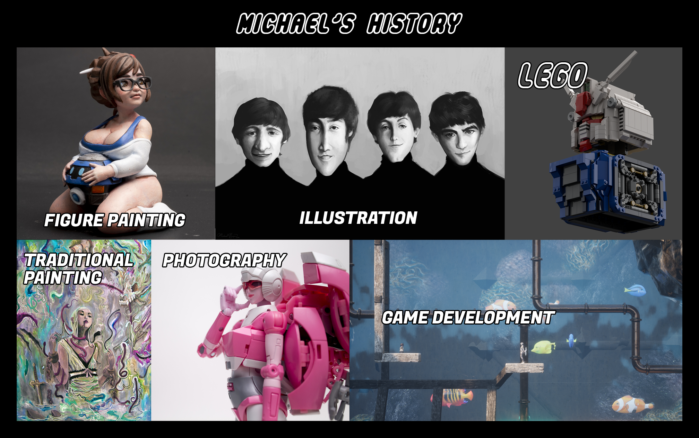

Introduction Video
About Mr. Brick Artist
Mr. Brick Artist is Michael Nguyen, a multi-media artist of both traditional and digital practices. He drew pictures and played with Lego bricks since elementary school. Having survived the great 80's and nasty 90's, inspiration comes from popular culture of the eras as well as the mundanity of the everyday world, embracing the evolution of visual design as time presses on. Michael now partakes in this collective evolution by building modernized representations of cutting edge media with Lego bricks, while providing their instruction collections so that communities of builders can participate for a shared experience born from the medium's limitless creativity.

Mr. Brick Artist Community and Instruction Collections
| Rebrickable Shop Page: |
|
| Patreon: |
|
| Brick Link: |

|
| Youtube: |

|
Mr. Brick Artist and all related content are copyright Ⓒ Michael Nguyen.